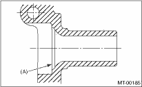

1. Wrap the clutch splined section with vinyl tape to prevent damage to the oil seal.
2. Apply UNILUBE #2 (or equivalent) to the sealing lip of the oil seal.
3. Install the needle bearing and new oil seal onto the front of the transmission main shaft assembly.
4. Attach the needle bearing outer race knock pin hole into the transmission case knock pin.
NOTE:
Align the end face of the seal with surface (A) when installing the oil seal.

5. Install the drive pinion assembly. 
6. Install the transmission case.
7. Install the transfer case together with the extension case assembly.
8. Install the manual transmission assembly to the vehicle.